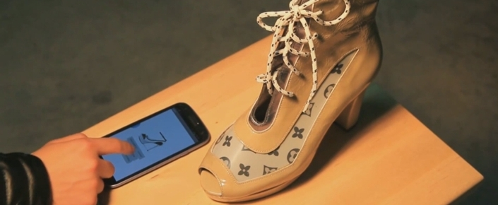

Istediginiz Renge Dönüstürebileceginiz Akilli Ayakkabi: Volvorii
Giyilebilir akilli ürünlerin yelpazesi gün geçtikçe gelismeye devam ediyor. Akilli ayakkabilarla ilgili daha önce Xiaomi'nin dahil bazi sirketlerin planlari mevcut. Tabi bu ayakkabilarin rengini degistiremeden, kendilerine has özellikleriyle kullanabiliyorsunuz.
